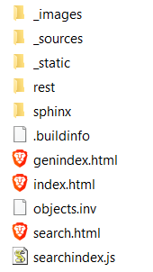
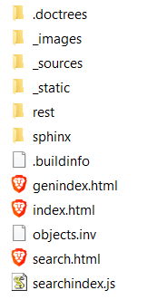
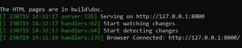
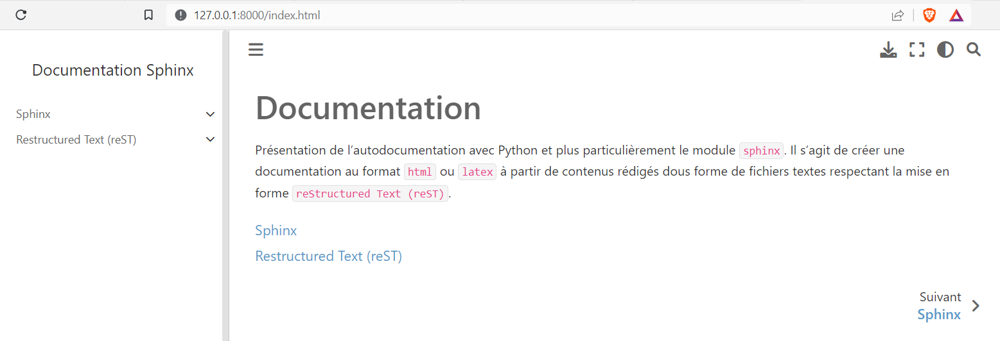

Lorsque les premiers contenus sont rédigés, il faut exporter la documentation au format html. Plusieurs méthodes sont possibles pour réaliser cette compilation.
Lors de la création de la structure avec la commande sphinx-quickstart, le fichier make.bat a été ajouté. Ce fichier est un exécutable windows qui lance l’exportation de la documentation dans un autre format.
La procédure est la suivante:
Ouvrir une console ou fenêtre de commande cmd et se placer dans le dossier de la documentation contenant le dossier source.
Saisir la commande:
makehtml
L’exportation se réalise dans le dossier build. Le dossier build contient alors 2 dossiers : doctrees et html. Le premier contient l’ensemble des ressources à exporter et le second l’exportation au format html.

Aller dans le dossier html et ouvrir le fichier index.html avec un navigateur.
Le programme batch make.bat n’est finalement qu’un programme qui utilise la commande sphinx-build avec des paramètres prédéfinis comme le nom du dossier où se trouve les sources de la documentation et le dossier de destination build.
On peut donc utiliser directement la commande sphinx-build à condition d’ajouter les paramètres nécessaires. La commande assez simple requiert 3 paramètres:
Dans notre cas, le format d’export est html, le dossier contenant la documentation est source et le dossier de destination est build. La commande est donc:
sphinx-build-bhtmlsourcebuild
Tous les fichiers de l’export sont directement inclus dans le dossier build, ce qui n’est pas conseillé.

Pour rassemebler la documentation dans un même dossier, il suffit d’ajouter un nom de dossier après le dossier build. Celui-ci sera créé s’il n’existe pas.
Les 2 méthodes précédentes ne permettent pas de visualiser directement dans le navigateur les modifications apportées à la documentation. Il faut relancer la commande d’export et actualiser le navigateur pour voir les modifications.
Une dernière méthode le permet. Elle s’appuie sur le module Python sphinx-autobuild. Il suffit juste de remplacer la commande sphinx-build par sphinx-autobuild:
sphinx-autobuild-bhtmlsourcebuild/doc
Après la validation de la commande, on remarque qu’un serveur web a été lancé et que la documentation est accessible à l’adresse http://127.0.0.1:8000 ou http://localhost:8000.

Dans le navigateur, on ouvre un nouvel onglet en saisissant l’url du serveur local lancé par la commande.

Le serveur web met à jour les pages web exportées dès qu’elles sont modifiées. C’est plus confortable et cela permet de corriger aussitôt si les modifications apportées ne sont pas satisfaisantes.